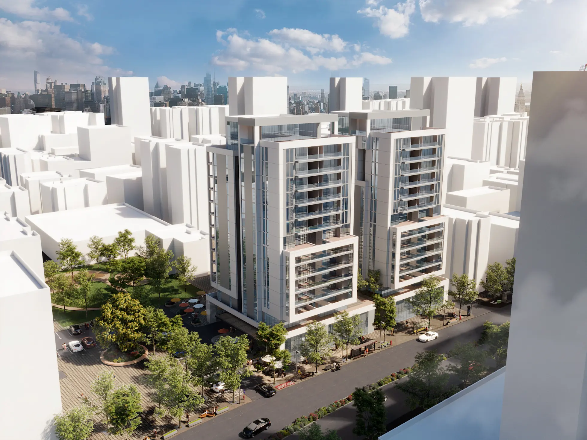

בסיס מדידה גיאודטי מדויק להליכי תכנון תב"ע - תשריט מצב קיים מהימן, מקושר למערכת הקואורדינטות הארצית (רשת ישראל החדשה), שמאפשר לאדריכלים ולמתכננים לעבוד מול ועדות התכנון בביטחון מלא.
דיוק גיאודטי עד רמת המילימטרמקושר לרשת ישראל החדשה10+ שנות ניסיוןתשלום רק אחרי ההגעה לנכס

בסיס גיאודטי לתכנון
תב"ע · תוכנית בניין עיר
מה זה תב"ע, ולמה הוא מתחיל במדידה מדויקת
תב"ע (תוכנית בניין עיר) קובעת את זכויות הבנייה, הייעודים והשימושים המותרים במקרקעין - והיא הבסיס החוקי לכל תכנון עתידי באזור. כל הליך תב"ע, מיזום ועד אישור, נשען על תשריט מצב קיים מהימן: מדידה גיאודטית מדויקת של המגרש והסביבה, מקושרת למערכת הקואורדינטות הארצית (רשת ישראל החדשה). בלי בסיס מדידה מדויק, גם התוכנית הטובה ביותר עלולה להיתקל בסטיות גבולות או באי-התאמה לנתוני הרשות מול הוועדה.
כל תוכנית תב"ע נבדקת ומאושרת ביחס למערכת קואורדינטות אחידה - רשת ישראל החדשה (ITM), המשמשת את כל רשויות התכנון והמיפוי בישראל. מדידה שאינה מקושרת נכון לרשת הזו עלולה ליצור סטיות וחוסר התאמה מול נתוני הרשות, ולעכב את האישור. אנחנו מבצעים את המדידה ומקשרים אותה במדויק לרשת הארצית, כך שהתשריט שמונח על שולחן הוועדה תואם, אמין ומוכן לבדיקה.
עיבוד נתוני המדידה והפקת תשריט מצב קיים מדויק, כולל קובץ DWG וענן נקודות.
4
מסירה ותיאום מול מודד מוסמך
מסירת בסיס המדידה לאדריכל או למתכנן, בתיאום מלא מול מודד מוסמך לחתימה ולהגשה הרשמית של התוכנית.
מתי פונים למדידה לתב"ע
שירות אחד, שלל תרחישים
מיזום תוכנית חדשה ועד התחדשות עירונית מורכבת - הבסיס תמיד אותו דבר: מדידה גיאודטית מדויקת ומהימנה.
יזום תוכנית תב"ע נקודתית
מדידת המגרש והסביבה כבסיס לתוכנית תב"ע נקודתית חדשה, מהיוזמה הראשונית ועד הגשה לוועדה.
שינוי ייעוד וזכויות בנייה
בסיס מדידה מדויק לבקשות לשינוי ייעוד הקרקע או הגדלת זכויות הבנייה במגרש.
פינוי-בינוי והתחדשות עירונית
מדידה גיאודטית של מתחם שלם לקראת תוכנית פינוי-בינוי או התחדשות עירונית מורכבת.
תוספת זכויות בנייה
תשריט מצב קיים מדויק לבחינת אפשרויות תוספת בנייה וניצול זכויות נוספות במגרש.
בסיס מצב קיים מול הוועדה
תשריט מהימן שמייצג נאמנה את המצב הקיים בשטח, לצורך דיון והחלטה בוועדת התכנון.
הטכנולוגיה שמאחורי הדיוק
סורק לייזר אחד. ענן נקודות מלא של כל שטח.
בלב מקובקי שירותי מדידה עומד סורק לייזר תלת-מימדי נייד מהמתקדמים בעולם. הוא יורה 1,200,000 קרני לייזר בשנייה, לוכד כל קיר, פתח וזווית תוך דקות - ומצלם את החלל ב-360° לתיעוד ויזואלי מלא.
1,200,000 קרני לייזר בשנייהאיסוף נתונים בזמן אמת, בהליכה רציפה
דיוק עד ±6 מ"מללא סטיות של מדידה ידנית
120 מ"ר בדקותסריקה מלאה של קומה, בלי לשבש שגרה
4 מצלמות HDתיעוד צבע וסיור 360° מלא
ביקורות מ-Google
אדריכלים, מתכננים ויזמים שכבר עובדים איתנו
5.0★★★★★ביקורות אמיתיות מלקוחות מרוצים
א
אורלי ט׳אדריכלית
★★★★★
כאדריכלית נדרשתי להשתמש בשירותי מדידות לצורך הגשה להיתר. הגעתי לעודד ומיד הבנתי שמדובר באדם מקסים, אדיב, שירותי, שעובד בצורה מקצועית וענה על כל הדרישות. ממליצה מאוד מאוד.
N
Nina Gמעצבת פנים
★★★★★
כל פרוייקט קטן כגדול מתחיל במדידה מקצועית. כבר שנים שאני עובדת מול עודד ומרוצה תמיד מהתהליך. המדידה לוקחת עשר-עשרים דקות ותוך ימים ספורים אני כבר מקבלת את הקבצים באיזה פורמט שאבחר: רוויט, אוטוקאד, סקטצ' אפ וכמובן עם סיור וירטואלי של הדירה שחוסך ללקוח שלי זמן הגעה לשטח. ממליצה.
ד
דנה פינגררמעצבת פנים
★★★★★
אני עובדת עם עודד מספר שנים ותמיד מרוצה מתוכניות המדידות שהוא מבצע. זהו שלב סופר חשוב בתהליך התכנון מכיוון שעליו מתבססות כל התוכניות. העבודה עם עודד תמיד נעימה, הוא שירותי ויעיל והתוצרים מתקבלים במהירות. ממליצה בחום.
ד
דנה נ׳מעצבת פנים
★★★★★
אני עובדת עם עודד שנים כמעצבת פנים. מעבר לזה שהוא מקסים ומאוד שירותי, המדידות תמיד יוצאות הכי מדויקות וכל התהליך לוקח כמה דקות. הסיור הווירטואלי שעודד מוסיף מאוד עוזר בשלב השיפוץ והתכנון. עבדתי בעבר עם מודדים אחרים, והיום עודד הוא המודד היחיד שאני עובדת איתו.
ד
דני עיצוב רהיטיםלקוח מרוצה
★★★★★
עודד ביצע עבור לקוחות שלי מדידה ואין כמוהו. החומר והשרטוטים הגיעו במקצועיות. מובנים ונוחים לעבודה. ממליצה מאד.
ש
שירלי צ׳מעצבת פנים
★★★★★
עודד המודד התותח, אני מעצבת פנים ומשתמשת בשירותי המדידה שלו ומרוצה מאוד. מעבר לדיוק ולניסיון, הערך המוסף שלו הוא בשירות גם לאחר ביצוע העבודה.
ר
רביד ר׳מעצבת פנים
★★★★★
נעזרת כמעצבת פנים בשירותי המדידה כבר כמה פרוייקטים. זריזות ויעילות. ממליצה בחום.
שאלות נפוצות
כל מה שחשוב לדעת לפני מדידה לתב"ע
מה זה תב"ע (תוכנית בניין עיר)?
תב"ע היא תוכנית מפורטת שקובעת את זכויות הבנייה, הייעודים והשימושים המותרים במגרש או באזור מסוים - כמה אפשר לבנות, לאיזו מטרה ובאילו תנאים. היא מהווה את הבסיס החוקי לכל היתר בנייה שיוגש בעתיד באזור.
למה נדרשת מדידה גיאודטית לתב"ע?
כל תוכנית תב"ע נשענת על תשריט מצב קיים מדויק: גבולות המגרש, השימושים הקיימים, גבהים ותשתיות. מדידה גיאודטית מקצועית מבטיחה שהנתונים תואמים את המציאות בשטח ואת נתוני הרשות, כך שהתוכנית לא נתקלת בבעיות או בעיכובים מול הוועדה.
מה זה רשת ישראל החדשה (ITM), ולמה זה חשוב?
רשת ישראל החדשה (ITM) היא מערכת הקואורדינטות הרשמית שמשמשת את כל רשויות התכנון והמיפוי בישראל. מדידה שמקושרת נכון לרשת הזו מבטיחה שהתשריט שלכם תואם במדויק לכל שכבות המידע הממלכתיות - גבולות, תשתיות ותוכניות סמוכות.
מה מקובקי שירותי מדידה מספקת, ומה התפקיד של מודד מוסמך?
מקובקי שירותי מדידה מספקת את בסיס המדידה הגיאודטי המדויק - סריקת לייזר, מדידת שטח ותשריט מצב קיים מקושר לרשת הארצית - שממנו נבנית תוכנית התב"ע. ההגשה והחתימה הרשמית על התוכנית, במקום שבו נדרשת חתימה של מודד מוסמך, מתבצעות בתיאום מלא עם מודד מוסמך.
מה רמת הדיוק של המדידה?
המדידה מבוצעת בדיוק גיאודטי עד רמת המילימטר, בשילוב סריקת לייזר תלת-מימדית ונקודות בקרה מאומתות - ברמת דיוק המספיקה לכל הליך תכנון ורישוי.
מה ההבדל בין תב"ע למפה טופוגרפית?
מפה טופוגרפית (מצבית) מתעדת את פני השטח - גבהים, עצים, מבנים ותשתיות - ונדרשת פעמים רבות כתנאי מקדים להיתר בנייה נקודתי. תב"ע היא מסמך תכנוני רחב יותר שקובע זכויות וייעודים לאזור שלם, ולעיתים קרובות נשען גם הוא על מדידה טופוגרפית ומדידה גיאודטית מדויקת של השטח.
יש לכם פרויקט שדורש מדידה לתב"ע?
ספרו לנו על התוכנית ונחזור אליכם עם הצעה מותאמת לבסיס המדידה הגיאודטי. ייעוץ טלפוני ראשוני - חינם, ותשלום רק לאחר ההגעה לנכס.